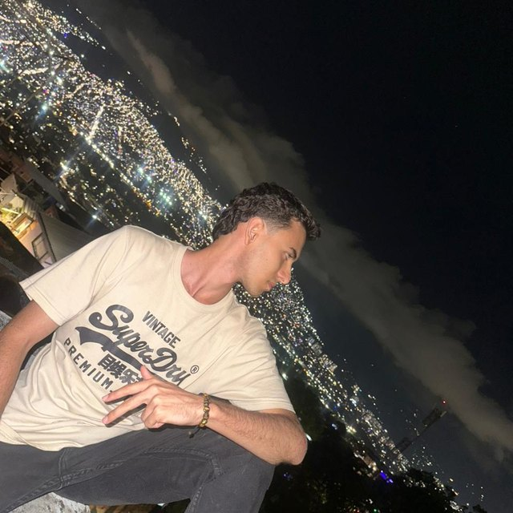

FAN DESK
Ventilador biomimético silencioso. Ganador del semillero de investigación STEM de EPM y primer puesto en Bienestar, Entorno y Comunidad. Lideré el proyecto.
JCamilo__
Estudiante en Desarrollo de Software, amante de la vida, persona de progreso
Me encanta aprender y engancharme en las cosas, hacerlas con ganas y con pasión y no me rindo aunque las cosas se pongan difíciles. Quiero superarme cada día y construirme como una gran persona. Me gusta progresar personalmente en lo que sé que no soy bueno
Conozco mi potencial y quiero aportar al mundo todos los días: con ganas de vivir la vida, conocer personas y trabajar sumando. Soy muy humano y alegre, como el sol de cada mañana :)

Ventilador biomimético silencioso. Ganador del semillero de investigación STEM de EPM y primer puesto en Bienestar, Entorno y Comunidad. Lideré el proyecto.
Semillero en Desarrollo de Software - Competencia Beca Salazar y Herrera.
Semillero de Software e IA de la IU Pascual Bravo.
Biblioteca virtual de mi proyecto de Media Técnica.
Equipo indie de trabajo de Media Técnica.
Amo investigar a fondo los temas que me llaman la atención. Eso me dio análisis crítico para detectar errores y detalles en cómo funcionan las cosas, y entender el cómo y el porqué.
Camino y leo en espacios naturales, conozco la ciudad y disfruto los pequeños detalles. Soy muy detallista. La cooperación es mi fuerte me gusta trabajar y solucionar en equipo :)